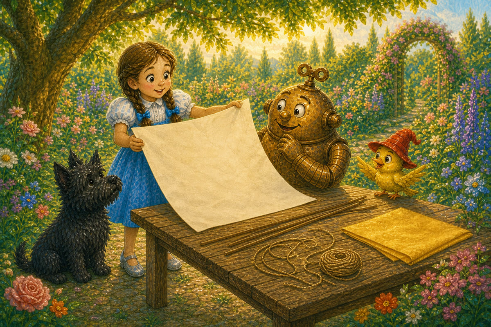
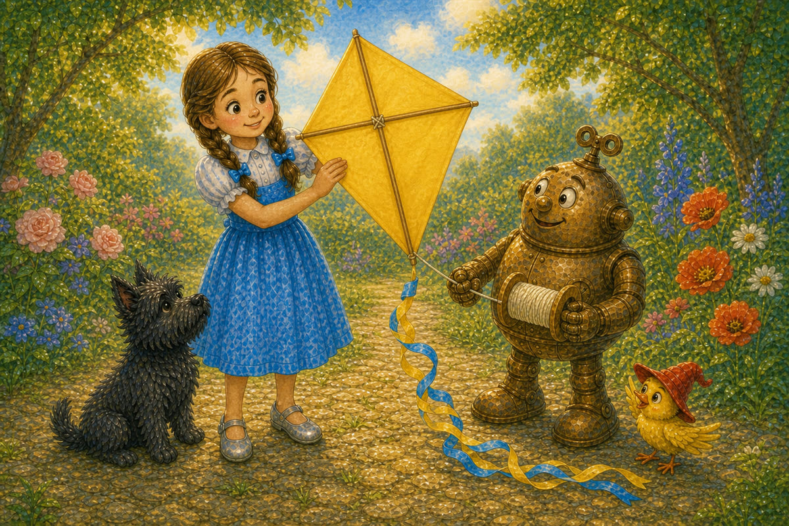
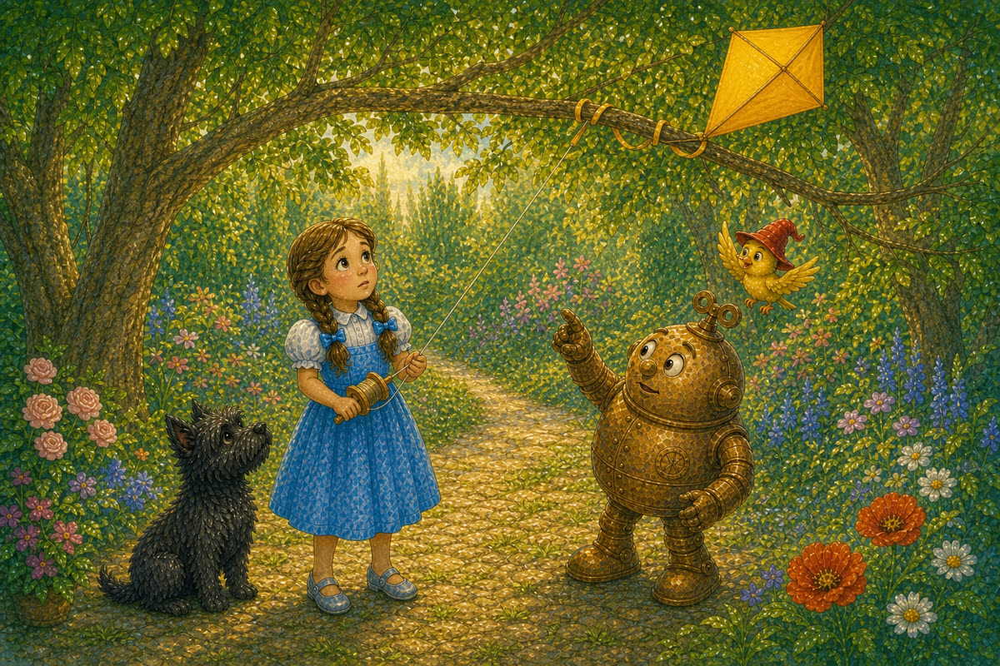
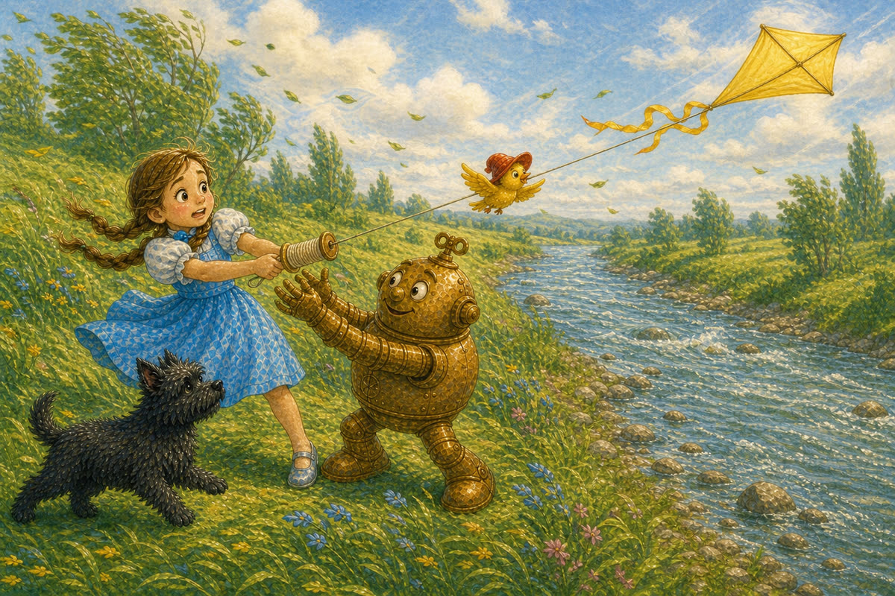
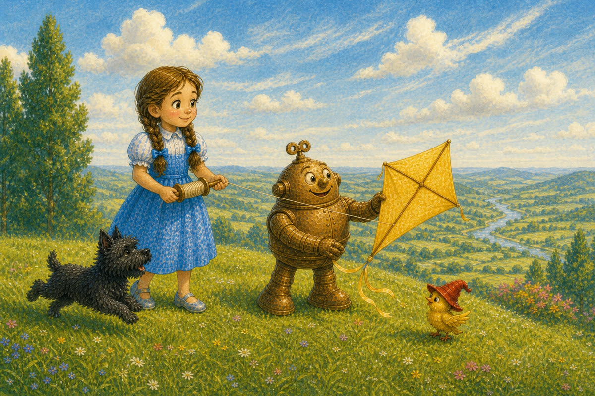
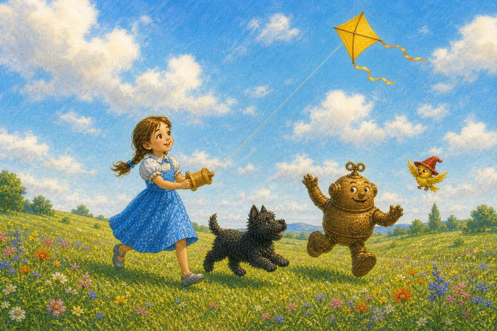
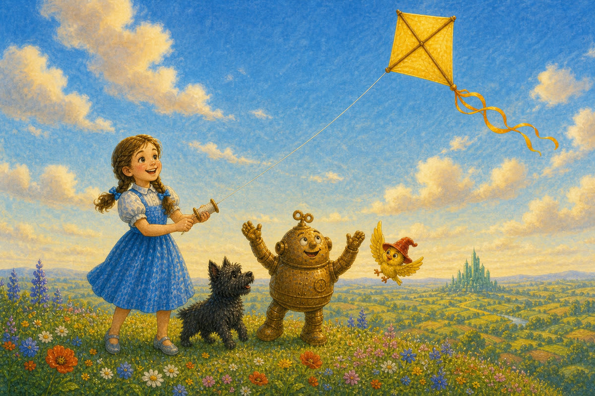

Pahina 1
Isang umaga, may dalang malaking papel si Dorothy sa hardin.
“Gagawa tayo ng saranggola,” sabi niya.
Lumapit agad ang mga kaibigan.
Isang bagong kuwento sa Lupain ng Oz
Basahin ang tatlong bagong pahina bawat araw. Bago magpatuloy, balikan muna ang mga pahinang nabasa na.

Isang umaga, may dalang malaking papel si Dorothy sa hardin.
“Gagawa tayo ng saranggola,” sabi niya.
Lumapit agad ang mga kaibigan.
Gumawa sila ng saranggolang dilaw.
Inilagay ni Dorothy ang dalawang patpat sa papel.
Itinali ni Tik-Tok ang gitna.
Tumulong ang ibon sa buntot.

Maya-maya, handa na ang saranggola.
“Lilipad ba ito nang mataas?” tanong ng ibon.
“Susubukan natin,” sagot ni Dorothy.

Pumunta sila sa ilalim ng mga puno.
Tumakbo si Dorothy habang hawak ang tali.
Umangat ang saranggola, pero sumabit ang buntot sa mababang sanga.
Maingat na kinuha ni Tik-Tok ang buntot.
“Maraming sanga rito,” sabi niya.
“Kailangan natin ng maluwag na lugar.”
Naghanap sila.

Pumunta sila sa tabi ng ilog.
Walang sanga roon.
Ngunit biglang lumakas ang hangin.
Hinila nito ang saranggola.
Muntik nang mabitawan ni Dorothy ang tali.
Hinawakan ni Tik-Tok ang tali.
“Masyadong malakas ang hangin dito,” sabi ni Dorothy.
“Hindi ligtas dito sa tabi ng tubig.”
Bumalik sila.
Naghintay sila.
Maya-maya, humina ang hangin.
“Marahan na ang hangin,” sabi ng ibon.
“Pumunta tayo sa burol!”

Maluwag ang ibabaw ng burol.
Walang mababang sanga at malayo ito sa ilog.
Humawak si Dorothy sa tali.
Tumakbo si Toto sa tabi niya.

Dahan-dahang umangat ang saranggola.
Lumipad ito sa ibabaw ng kanilang mga ulo.
Pumalakpak ang ibon.
Sumayaw si Tik-Tok.
Minsan, bumaba ang saranggola.
Hinila ni Dorothy ang tali.
Muling lumipad ang saranggola.
“Tamang lugar at tamang hangin!” sabi niya.

Tumaas ang saranggolang dilaw sa langit.
Hindi ito sumabit, at ligtas ang mga kaibigan.
Sa ilalim nito, tumawa silang lahat habang umiihip ang hangin.
Pag-usapan natin